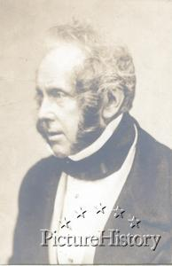

Secrecy In Statecraft:
A Brief Look Into
The Life Of Allen Dulles
by Elias Alias
~
Let's begin with a brief quotation from the American Historical Association, as found at this page on their Internet website:
http://www.historians.org/info/AHA_History/gacraig.htm
There, we read:
“How the State asserts its authority in foreign affairs has been described by Stanley Hoffmann in a passage that emphasizes the degree to which its sphere of action is composed not of determinable but of uncertain factors that it is the duty of statecraft to assess, shape, and exploit. Statecraft, Hoffmann has claimed,
(Hoffmann, Gulliver’s Troubles: or, The Setting
of American Foreign Policy (New York, 1968), xvi.)”
end quoted passage from American Historical Association article by Gordon A.
Craig.
~
As we note Mr. Hoffmann's observation that 'statecraft' emanates within the system of a domestic society and comes to operate within what is called an 'international system', we approach also a phenomenon known as “Policy”. It is as though Statecraft produces or affects or influences Policy, and in some circles that supposition is upheld as the prime purpose of Statecraft. Policy is shaped, produced, and made manifest through history by the workings of Statecraft, so we may say as a premise that Statecraft in some ways produces Policy, and that Policy is the outcome of the practice of Statecraft.
I would suggest that there is Domestic Policy, and there is Foreign Policy, and there is, even for some individuals at this late date in American history, Personal Policy. I am supposing that Foreign Policy is derived from the sum total of activities within Domestic Policy, and that Domestic Policy must derive from the interacting and originating Personal Policy of as many individuals as may exist, interact, and/or compete within the domestic totality.
American history may be seen as a long sequence of competing efforts to shape Policy. Competitors in Statecraft within a society may be called “Players”. We may now like to view the world through the life of one very active and involved Player named Allen Dulles. But Allen Welsh Dulles had a brother, John Foster Dulles, and because both brothers contributed in significant ways to American foreign Policy it is difficult to treat of one without also treating of the other. But let us focus primarily on Allen Dulles.
British Statecraft, British Policy

“We no longer have permanent
principles, but permanent interests, which we pursue to the exclusion of all
else.”
- Lord Palmerston, British Prime Minister at the time of the Opium Wars
~
To begin, let us go back into history and note that in the late
1700s a handful of radical malcontents in the North American British colonies
had taken a disliking for British “Policy”. Their consensus opinions, shared and
enhanced by the pooling of their interacting perceptions, led to the American
Revolution which we commemorate each Fourth of July as “Independence Day”. As an
exercise of Statecraft, the American Revolution was hardly sophisticated. In
fact, it was a rather blunt and brutal affair, a boisterous bout of Brit-bashing
which cheered, in its final military victory, a previously meek and submissive
western world, a world which sought a more direct and compatible representation
of itself as regarded the Policy of governance.
What these Players did was quite illegal, and the authority of the Throne sought to control them by the employment of what we today would call “law enforcement” which acted in the name of British Security. Warrants were issued for the arrest of some of those Players. Other Players who preferred to be law-abiding and subservient to the Throne and who were content to prosper under the authority of that Throne and its Policy included traditional British Tory “Houses” of wealth, security, and comfort. A number of New England families of the Tory persuasion had long held business relations with the mother country, England.
To such families, George Washington's band of violent malcontents and illegal efforts at revolution seemed to pose a threat to their secure and profitable relations with England. It was from such understandable motives that the “Loyalist” opponents to the Revolution came. Many Tory families, to which we may refer as “Houses”, resisted the revolution, snitched-off the troop movements of Washington's army, aided the British soldiers, manipulated finances and other leverages, and in general tried to assist the Throne in maintaining its authority over its Colonies. The prevalent view of the day was that England legally owned the Colonies, which were therefore legally subject to the Throne's “foreign policy”, or, as we now may call it, the Throne's “distant domestic Policy”. In truth, our American Revolution was an act of outlawry, was illegal, employed much violence and death-dealing, and could successfully be prosecuted as such in any court which might try the culprits. In today's political jargon, our founding fathers would be called "insurgents" and "terrorists".
But perhaps any Policy is dependent upon, among other factors, the 'power' to govern the subjects of said Policy and to overcome any opposition to said Policy. The power of governance may be seen to be dependent upon at least one hierarchy in authority, so let us think about hierarchy and authority for a moment. We read in a book by Joel Kramer and Diana Alstad, entitled “The Guru Papers” (1), this accounting of it -
“Hierarchy is a way of structuring power; authority is a way of exercising power; and ultimately morality is the way authority is justified.”
Whether the Throne used the term or not, the British Policy consisted of what Stanley Hoffman in the quotation above called “Statecraft” as perceived and employed in the governance of the individuals who comprised the populations of the Colonies in North America. Statecraft. As Mr. Hoffman notes, Statecraft emanates from domestic society and operates in the international community as “Policy”.
Remembering the fact that various New England Tory 'Houses' held close business ties with the British Empire, let us now recall this passage from Chaitkin and Tarpley:
“Young South Carolinian Joseph Heatly Dulles, whose family bought their slaves with the money from contract-security work for the British conquerors in India, was in a previous secret Yale group, the ``Society of Brothers in Unity.'' At Yale Dulles worked with the Northern secessionists and attached himself to Daniel Lord; their two families clove together in the fashion of a gang. The Lords became powerful Anglo-American Wall Street lawyers, and J.H. Dulles's grandson was the father of Allen Dulles and John Foster Dulles.” - From George Bush: The Unauthorized Biography by Anton Chaitkin and Webster G. Tarpley. (2)
I wish to note here that the British Empire has given us a precedent in which a Western Civilized Empire, of and with a “Christian bent”, did indeed exercise as a matter of official “Foreign Policy” the international smuggling of a narcotic drug (opium) for the expressed purpose of bolstering the Empire's economy, and displayed a willingness under Lord Palmerston (Prime Minister of Great Britain) to use military force (the British Navy's battleships) to protect and expand its smuggling enterprises. This is now known history, and is a precedent.
The key word here is precedent. It was official Policy and it incorporated the Bank of England's relations with the Throne, so that we now can see a combination of financial and military forces working in tandem to effect and expedite British governmental Policy to smuggle opium into China. The unrestricted light of knowable history shows today quite clearly that the British Navy was employed to force China to accept British importation of opium into China, and shows that such deeds were matters of British Foreign Policy. Lord Palmerston contributed to that style of statecraft.
Joseph Heatly Dulles, while not working for the House of Russell in direct opium-smuggling, was instead involved in the slave trade until relocating to South Carolina and Pennsylvania. Because the British East India Company was involved in both opium-smuggling and slave-shipping, and because he was at Yale, we find it easy to understand that J. H. Dulles would have been in contact, directly or indirectly, with those New England Tory Houses who were in business with the opium-smuggling aspect of the East India Company, and we now know that J. H. Dulles was a member in a secret society at Yale. It is from those early associations that we today draw the parallels which may be seen by association as a, perhaps - or perhaps not - un-organized collusion. From such roots sprang Allen Welsh Dulles and John Foster Dulles.
~
Allen Welsh Dulles was born on April 7, 1893, to Allen Macy Dulles and Edith Foster Dulles. Edith was the daughter of General John Watson Foster, former Secretary of State, former U.S. Army General during the Civil War, and former U.S. envoy to Spain. In the definitive biography of Allen Dulles written by Peter Grose we read the following:
“If the family of John Watson Foster savored life at the summit of Washington society at the turn of the twentieth century, the Dulles side of the family was ever mindful of the truer aristocracy of birth. The Irish family name had been Douglas before being softened in the course of the seventeenth century. It was Dulles on arrival in the New World in 1779, borne by a bounder from Limerick who had fled to Holland concealed in a large butter churn, enlisted in the Dutch East India Company, and managed to make his way to Bombay, where he assembled something of a fortune – his descendants chose not to inquire just how he did it. Arriving eventually in South Carolina, this Joseph Dulles helped defend Charleston in the siege of the Revolutionary War, then managed a good marriage to the heiress of a cotton plantation, with its attendant Negro slaves. He prospered in commerce. Their one surviving child, a 'delicate boy', they sent away to Yale. In the remote north this frail offspring survived to the age of eighty and fathered eight hearty children, who in turn produced sons and grandsons, including the serious pastor Allen Macy Dulles, who sought betrothal to the daughter of General Foster. The Dulles and Foster families were joined in January 1886....” (3)
In the 1920s both brothers became lawyers in the law firm of Sullivan and Cromwell where they specialized in international law. They devoted boundless energies to the needs of another Wall Street firm – Harriman Brothers. (Harriman Brothers would later merge with Brown and Company, and today trades on the New York Stock Exchange as “Brown Brothers Harriman”.)
Harriman Brothers was deeply involved in the reconstruction of Germany after World War I. The most powerful partners in Harriman Brothers were E. Roland Harriman, his brother Averell Harriman, and George Herbert Walker. When Prescott Sheldon Bush, our current President's grandfather, married George Herbert Walker's daughter, he was not a powerful man, but one who was about to become powerful - with the assistance of the Harrimans and their partner, George Herbert Walker.
In marrying the daughter of George Herbert Walker, a young Prescott Bush was brought into the management at Harriman Brothers. Eventually, when Harriman Brothers created “Union Banking Corporation” as an umbrella bank overseeing more than a hundred Wall Street corporate ventures of trade with Nazi Germany, Prescott Bush was elevated to a Director's status at Union Banking Corporation. Because the most prominent Wall Street lawyers who did the interfacing of international law to arrange American business access to the rebuilding of Germany were in intimate contact with the leadership of Harriman Brothers and Union Banking Corporation, Prescott Bush certainly worked with Allen Dulles and John Foster Dulles. On page 258 of Grose's “Gentleman Spy” we read:
“Future great names of America's intelligence service were among the reverent callers to Allen's suite: Kermit “Kim” Roosevelt, grandson of Theodore, collecting stories for an official history of the OSS; Tracy Barnes, reliving the days with Countess Ciano; Richard Helms, bringing news of Germany; Frank Wisner... ; Per Jacobsson and Royall Tyler passed through New York; Jacobsson had been named managing director of the International Monetary Fund, and Tyler was to be head of the Paris office of the World Bank.
“Old friends like these would complement the dinner parties on Sixty-first Street or join the gentlemen's lunches on Wall Street. After one such, the investment banker Prescott Bush remembered Allen fondly; 'He entertained us beautifully, as only he could. We thought afterwards how much fun it was to get on the inside of things. And yet, when he was gone, we discovered that he had really told us nothing, but nothing.'” (4) [Emphasis Peter Grose, in original.]
Prescott Bush was Skull and Bones; the Dulles brothers were Council on Foreign Relations with Yale connections going back to their great grandfather. The mother of the Harriman brothers hosted the 1932 World Conference on Eugenics in New York City and brought in the man who would become Adolph Hitler's master Eugenicist, Ernst Rudin, whom the elder Mrs. Harriman lauded publicly in the press by noting that it was unfortunate that more Americans did not agree with Mr. Rudin's and Adolph Hitler's views on “racial purity”.
While this is all established in the public record, in newspaper archives, the Congressional record, old magazine articles and interviews, State Department files, books, and in corporate records which are available to the public today, it yet strikes me as horribly ugly to have to realize that a death-cult with connections to European schools of the occult, (Skull and Bones, as brought to Yale from Germany/England occult banking-elite families by W. H. Russell) - and the most powerful private-sector think-tank to ever directly affect U.S. foreign Policy, (the CFR) - and Hitlerian principles of eugenics, (“racial purity”) - were each and all combined and represented in fact – not just symbolically - by the business partnership between the Harriman family, the George Herbert Walker family, and the Prescott Bush family. That their commonality takes each family back to the anti-American Revolution treacheries of the old Tory Houses of New England, the loyalists who opposed our independence, only further stitches an ugly warp and woof into the fabric of American history. Allen Dulles was right in the thick of all that; he was a player.
From Dr. Dennis L. Cuddy (5) we learn that President Woodrow Wilson had in 1913
published “The New Freedom”. In it President Woodrow Wilson noted:
"Since I entered politics, I have chiefly had men's views confided to me privately. Some of the biggest men in the U. S., in the field of commerce and manufacturing, are afraid of somebody, are afraid of something. They know that there is a power somewhere so organized, so subtle, so watchful, so interlocked, so complete, so pervasive, that they had better not speak above their breath when they speak in condemnation of it."
International business needed international law, which called for international lawyers. Allen Dulles of the prestigious law firm on Wall Street, Sullivan and Cromwell, was one of those
lawyers in the 1920s and throughout the 1930s when Wall Street assisted the buildup of the Third Reich. Today we know that IBM furnished the computer which Adolph Hitler used to number the Jews. We know that Exxon's parent corporation, Standard Oil of New Jersey, a Rockefeller corporation, did patent-sharing with I.G. Farben of Nazi Germany to put the fuel in Hitler's trucks and tanks and aircraft. We know that some of the ownership of the Hamburg-Amerika steamship lines sat on the board of Union Banking Corporation with Prescott Bush, who used Hamburg-Amerika to channel the payroll funding of Hitler's Brown Shirts. We also know that Fritz Thyssen held a presence at Prescott Bush's Union Banking Corporation.
Allen Dulles played a role in all that.
We also know that on October 20, 1942, ten months after we had declared war on Germany, the assets of Prescott Bush's Union Banking Corporation were seized by U.S. government vesting order number 248 under the “Trading With The Enemy Act”. President Roosevelt's Alien Property Custodian, who signed the vesting order, was Leo T. Crowley. (2 in notes, page 20) George Herbert Walker, the Harrimans, and Bush had continued to do business with Nazi Germany for months after the U.S. Congress declared war on Germany. In the middle of it all stood Allen Dulles, who would join his brother while President Truman was still in office to arrange the damage control that was needed after Hitler's fall.
Allen Dulles and John Foster Dulles, two Wall Street lawyers who had done the lion's share of the financial arrangements which empowered Adolph Hitler and his Nazi party across the 1930s, in 1947 went to Clark Clifford and assisted in the creation of the “National Security Act of 1947”, which Truman signed into law.
That National Security Act of 1947 created among other things the Central Intelligence Agency (CIA). It additionally created the NSC at the White House and something especially secret – the “Black Budget”. In effect, it created the the mold or template for a “shadow government” which would function inside our supposedly representative government in total secrecy. As an example, we note that the former Director of FHA and Assistant Secretary of HUD under Bush 41, Ms Catherine Austin Fitts - previously of Dillon, Read, & Co., Inc. on Wall Street - has revealed a fifty-nine billion dollar deficit at HUD which is attributed to covert money-theft by CIA. (6)
But the primary focus at present is the fact that two lawyers who had arranged the interfacing of international law to facilitate the rise of the Third Reich in Germany subsequently assisted Clark Clifford in composing the National Security Act of 1947, and helped create thereby the CIA. (When we look into the BCCI affair we shall note that, much later, Mr. Clifford assisted the very CIA which he had helped create by introducing BCCI illegally and fraudulently into this nation, and we shall look at the Congressional investigation into Clifford in conjunction with its investigation of BCCI – one of the CIA's largest drug-smuggling, illegal arms shipping, and money-laundering banks which was shut down by various governments, including England, and investigated by the U.S. Congress.)
Some things which might be done with a brand new Central Intelligence Agency
No one representing the European oligarchies wasted any time once they had the
CIA installed under official government roofs in America. One of the first matters in which
the CIA engaged secret action, upon the suggestion of Allen Dulles, is called
“Operation Paperclip”, in which the CIA salvaged several hundred German Nazi war
criminals and snatched them out from under the Nuremberg War Crimes trials by
hiding them inside the CIA. I would like to emphasize that point – the
newly-created CIA, itself created by Clark Clifford and two of Hitler's biggest
Wall Street lawyers, immediately hid known Nazi war criminals inside its secret
corridors and offices, here and abroad, and spared them from international
justice after the fall of Hitler. I would submit for consideration that that
pregnant fact itself, as one interesting fact among others, gives birth to more
than simple speculation regarding ulterior motives in the mind of Allen Dulles.
Clark Clifford – Statecrafter : National Security Act of 1947; Player : BCCI
Among the Nazis brought into the CIA was Reinhard Gehlen, the triple-agent who
had masterminded Hitler's eastern European spy sectors. That travesty was Allen
Dulles' idea, worked through the very CIA he had helped create. Another
despicable Nazi war criminal hidden inside the CIA was Klaus Barbie.
Another nefarious deed by Allen Dulles was the initiation at CIA of “Project MK-ULTRA”, which was the umbrella code-name for the CIA's mind-control research and development (R&D). Much of MK-ULTRA involved the various talents of the Nazi war criminals whom Dulles had hidden inside CIA. MK-ULTRA was finally investigated by the U.S. Senate, which stood aghast at learning that then-DCI Richard Helms deliberately ordered the destruction of CIA's records on MK-ULTRA prior to being served by the Senate committee. It is estimated that about eighty percent of CIA's MK-ULTRA records were destroyed before the Senate could obtain them, but Senator Ted Kennedy noted that the ten to twenty percent of remaining records were “damning enough”. Unwitting American citizens and American military personnel had been used in mind-control experiments which included the use of very serious drugs. The entire project was to study the science of mind control. (7 and 8)
Moving forward in time, Allen Dulles became the DCI (Director of Central Intelligence) at the CIA he had helped create. He was President Dwight D. Eisenhower's DCI. As DCI of CIA under Eisenhower, Allen Dulles was tasked with the briefing of the next incoming President, John F. Kennedy, when Eisenhower was leaving office. At the briefings which touched on Eisenhower's secret plans to invade Cuba, which Allen Dulles had to sell to the incoming Kennedy, was another Skull and Bonesman, Richard Bissell, the number-three man at CIA. Kennedy granted the needed new “Finding” to carry on with the process of training a clandestine army for invading Cuba. But Kennedy made it clear that the U.S. government could not possibly be overtly involved in this illegal invasion – a fact which precluded the use of U.S. military aircraft as support for the beach landing assault. Dulles and Bissell had other notions, but they left Kennedy slightly in the dark about their truest intentions regarding exposure of U.S. involvement in the invasion.
Anyone may wonder how I could say that “Dulles and Bissell had other notions”. Aside from other sources which indicate that Dulles and Bissell withheld from Kennedy some information regarding the full details of their plan, such as their secret intent to force Kennedy to use U.S. aircraft at the height of the invasion, there are the following passages from Gentleman Spy by Peter Grose -
~Begin quoted passage from Gentleman Spy, pages 519 – 522:
The Bay of Pigs plan was conceived upon two major premises, both of which were misunderstood by President Kennedy and the people closest to him: the so-called guerrilla option for the invading force and the need for an air strike to accompany the landing. A further misreading, most serious of all, became fully evident only in Allen's troubled reflections years later.
But when the president and his policy advisers considered the Cuban operation again on March 11, Kennedy vetoed the Trinidad plan as too “spectacular”; he asked instead for a more obscure site for a “quiet” landing, “without having the appearance of a World War II-type amphibious assault.” The myth that the invasion could be kept covert died hard. Within the next five days Bissell and his team shifted the proposed landing site to a little bay near near the thinly populated swamp of the Zapata Peninsula, the Bahia de Cochinos, or Bay of Pigs. Never was the eager informality of the CIA's operating culture shown up to such disadvantage. In later years Bissell was admirably candid in a critique of his own lapse:
“It was rather lightheartedly assumed ... that the swampy regions around the Bay of Pigs, while utterly different geographically from the mountains near Trinidad, could support guerrilla operations. With hindsight, this assumption was highly questionable and, in any event, was not carefully researched in the planning of the operation. The implications for the 'guerrilla option' of the shift from Trinidad to the Bay of Pigs were never made clear to the President ... Those in charge of the operation must accept a serious responsibility for having ill-informed the President on this aspect of the operation.” (Richard Bissell)
Allen looked back in harsh judgment on his own culpability: “I should have said, 'Mr. President, if you're not willing to permit us to take the steps necessary to ...substantially immobilize the Cuban air force (which was a very small and crotchety and defective air force at that time), the plan to get this brigade ashore with its equipment and supplies is a faulty one.'”
But Allen did not say this to Kennedy. Nor did Bissell or General Pearre Cabell, Allen's principal deputy, as they sat in the secretary of state's office late Sunday night, April 16, when Rusk called the president to present their arguments for reinstating the air strike. Kennedy was unpersuaded. Rusk removed the telephone from his ear and held it out across the desk, inviting Cabell or Bissell to make their case to the president directly. Weary and discouraged, they declined.
A far more serious malfunction of policy and intelligence occurred in the experience of the Bay of Pigs. Some officials at the time may have harbored their private suspicions, but the official inquiry that Kennedy ordered immediately after the disaster took scant notice of it. Only twenty-three years later did vague suspicion become admitted fact, through the study of handwritten notes Allen made in retirement. In 1965, after Kennedy's death, Allen wrote about the Bay of Pigs, in effect replying to criticism of CIA's mismanagement of an operation gone wrong. But when it came to submitting the manuscript for publication, he held back. Clover noted after Allen's death that he decided against publishing his account “because there was so much more in his favor he could have said, if he had been at liberty to do so.”
Perhaps, but the fact remains that for decades to come CIA was accused of violating the trusts of the democracy that created it, of arrogance in the absence of accountability, of operating like an “invisible government”. CIA stalwarts scoffed at the charges, but it can now be argued convincingly that in the Bay of Pigs operation the clandestine services were behaving just as the critics charged.
From the start and throughout, both Eisenhower and Kennedy had been adamant that no United States military personnel would be permitted to participate in any combat action against Cuba. Kennedy had said as much in a press conference on April 12, the week before the landing: “There will not be, under any conditions, an intervention in Cuba by the United States armed forces.” The leadership of CIA ultimately did not accept the president's words. Whatever the stated policy, Allen and those around him adhered to the comfortable belief that the armed forces of the United States would back them up in preventing the failure of a covert action, no matter how botched or ill conceived it turned out to be.
Evidence for this serious charge appears in Allen's typed and hand-written, coffee-stained notes, which were preserved with his personal papers at Princeton. In this tentative form he voiced candid explanation for his failure to disabuse Kennedy of the key misunderstandings, about the guerrilla option and the covert nature of the invasion.
“[We] never raised objections to repeated emphasis [by the President] that the operation: a) must be carried through without any 'combat' action by U.S.A. Military forces; b) must remain quiet [and] disavowable by [the] U.S. government; c) must be a quiet operation yet must rouse internal revolt vs. Castro and create a center to which anti-Castroites will defect. [We] did not want to raise these issues ... which might only harden the decision against the type of action we required. We felt that when the chips were down – when the crisis arose in reality – any action required for success would be authorized rather than permit the enterprise to fail.... We believed that in a time of crisis we could gain what we might have lost if we provoked an argument [in advance].”
~ End quoted passages from Gentleman Spy by Peter Grose.
So there we have it. Kennedy, a new generation's newly-elected President, it now appears, did not have the “old school” savvy with which to anticipate the CIA's capability for getting its way and for presuming to leverage White House Policy by necessity. Call it clandestine statecraft. I wish to confess my gratitude to Peter Grose for including this candid glimpse in his biography of Allen Dulles, and salute him for being honest on this matter, despite the fact that I am not a fan of Peter Grose's world view. (Recall, he also wrote the flowery history of the CFR which is on their website. www.cfr.org )
Long story shortened, the invasion of 1961, known forever as the Bay of Pigs Fiasco, blew up in the CIA's face – and in Kennedy's face. In an attempt to save face, Kennedy ordered an investigation, and he subsequently fired Allen Dulles from his post as DCI of CIA.
Some time later John F. Kennedy was shot dead in Dallas, Texas.
After Kennedy's murder, Allen Welsh Dulles, the man who had helped engineer the rise of
the Third Reich, the man who had helped create the CIA, the man who had sat
finally atop CIA as Eisenhower's DCI, the man who had initiated the CIA's
“mind-control” research, the man who had staffed the CIA with Nazi war
criminals, the man who held oversight responsibility for the failed and
disgraceful Bay of Pigs, the man who was fired from atop the CIA by President
Kennedy – was appointed by President Lyndon B. Johnson to sit atop the Warren
Commission which would investigate the assassination of President John F.
Kennedy.
~

Statecraft. Secrecy. Security. The three faces of Allen Dulles.
Without delving more deeply into the many intrigues and mysteries of the man,
we must agree that Allen Welsh Dulles was quite the Player in U.S. Policy, both
foreign and domestic. Allow me to sum up some of the high points of his career
in Statecraft thusly:
1: Allen Welsh Dulles was a lawyer at Sullivan and Cromwell on Wall Street, and an early member in the CFR (Council on Foreign Relations).
2: He worked the international legal interface between Wall Street firms and the build-up of the Third Reich in Nazi Germany.
3: He specifically served the legal needs of two financial organizations on Wall Street which supported Hitler's Nazi infrastructure – Harriman Brothers and Union Banking Corporation – both of which were seized by the government under the Trading With The Enemy Act.
4: After Hitler's defeat, Allen Dulles assisted Clark Clifford in writing the National Security Act of 1947, which created the National Security State, which supplanted the Federal government of the United States of America. That act also created the Black Budget, the NSC, and the CIA.
5: In the CIA's formative years Allen Dulles initiated Operation Paperclip, which brought into the U.S. Intelligence community hundreds of Nazi war criminals, and deliberately hid them from war crimes prosecution. Allen Dulles initiated, using those Nazi war criminals, Project MK-ULTRA, which was the centerpiece in CIA's mind-control (behavior control) research and development – a legacy investigated by the U.S. Senate.
6: Allen Dulles became DCI at CIA under Dwight D. Eisenhower, then briefed the incoming John F. Kennedy on Ike's secret plans to invade Cuba with a clandestine CIA-trained army of mercenaries.
7: Allen Dulles and Richard Bissell oversaw the Bay of Pigs invasion, which blew-back in Kennedy's face and caused Kennedy to investigate the invasion, and its sources at CIA, publicly.
8: John F. Kennedy subsequently fired Allen Dulles from his post as DCI of the very CIA which Dulles had created, after which John F. Kennedy was shot dead in Dallas, Texas.
9: LBJ appointed Allen Dulles to the staff of the Warren Commission to investigate Kennedy's murder.
10: The American public, by and large, accepted this and did not revolt against treasonous criminality by one of the 20th Century's greatest workers of secret Statecraft.
I close by noting that transparency is absolutely necessary in any representative government. When government deceives the citizenry behind a cloak of 'national-security secrecy' and clandestine statecraft, that government cannot be said to be representative at all. When government is given the "legal right" to lie, which is exactly what is at the core of the National Security Act of 1947, democracy cannot exist, even in a Republic of law. Today's woes, both internationally and domestically, may in large part be traced back to this sort of mischief in statecraft. But consider this: if the press and the media fail to bring such things to public attention, and if the NEA, by controlling the content of public school textbooks, suppresses this sort of American history, can Americans be truly said to be informed when they go to election booths? And finally, I ask: If Senators Burns and Baucus both voted for the National ID card, (which they both did), the so-called REAL ID ACT, what may we say about their sense of loyalty to our personal freedom and liberty as Americans and Montanans, and how else should we interpret that sort of statecraft if not a deliberate abuse of our vested power and our trust?
~
Notes:
1) The Guru Papers: Masks of Authoritarian Power
by Joel
Kramer and Diana Alstad; North Atlantic Books, Frog LTD, PO Box 12327, Berkeley,
California, 94712. ISBN: 1-883319-00-5.
2) George Bush: The Unauthorized Biography
by Webster Griffin Tarpley and Anton Chaitkin; Executive Intelligence Review; Washington, D.C.; 1992.Fascimile Edition – Reprinted and copyrighted 2004 by ProgressivePress.com, an imprint of “Tree of Life Books”; P.O. Box 126; Joshua Tree, CA 92252; Second printing February 2005; ISBN: 0-930852-92-3. Original edition 1992: ISBN: k0-943235-05-7; Library of Congress Catalog Card Number: 91-78005; EIB 92-002; Executive Intelligence Review, P.O. Box 17390, Washington, D.C. 20041-0390.
3) Gentleman Spy: The Life of Allen Dulles
by Peter Grose; A Richard Todd Book, Houghton Mifflin Company, Boston, New York, 1994; copyright 1994 by Peter Grose; ISBN: 0-395-51607-2
4) Ibid; page 258
5) Dr. Dennis L. Cuddy in his essay: A CHRONOLOGICAL HISTORY OF THE NEW WORLD ORDER as found in the Internet, here: (link good as of January, 2006) http://www.psicounsel.com/NWOchron.html
Catherine Austin Fitts is author of the Foreword in Michael Ruppert's “Crossing The Rubicon”. She appears in Aaron Russo's film, America: Freedom To Fascism, available here: http://www.freedomtofascism.com/
As President of Solari, Inc., Catherine is currently spearheading the Solari Circles Campaign to help make healthy local living economies the best investment worldwide. Catherine's article on the Black Budget and Market Manipulations is on-line here: http://www.conspiracyplanet.com/channel.cfm?channelid=116&contentid=1259
After I wrote this in 2005, Catherine Austin Fitts has published, in 2006, a valuable work entitled Dillon Read & Co. Inc. And The Aristocracy of Stock Profits, which is online here: http://www.dunwalke.com/ There is an introductory by Catherine followed by the story, which begins here:
http://www.dunwalke.com/1_Brady_Bush_Bechtel.htm Ms Fitts was a managing director and member of the board at Dillon Read & Co. Inc. before accepting a post in the Bush-41 Administration. She gives us an insider's perspective on how Wall Street does what Wall Street does. Her work is an indictment and a revelation.
7) Operation Paper Clip is easily Googled on the Internet, but perhaps one of the best sources from which to begin to learn of this project by CIA is at Wikipedia, here: http://en.wikipedia.org/wiki/Operation_Paperclip
8) Acid Dreams by Martin Lee and Bruce Shlain; copyright 1985; Grove Press edition ISBN: 0-394-55013-7; Evergreen edition 1985 ISBN: 0-394-62081-X
~
This article copyright 2005, 2007 by Elias Alias and The Jefferson River Gazette. Used by permission.
~